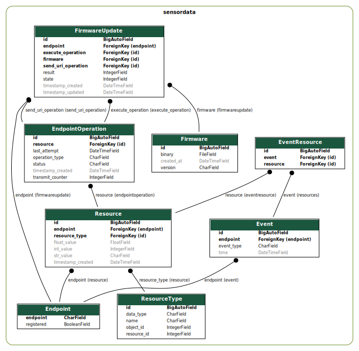

An IoT device is a resource constrained (energy, flash..) that is connected to
the internet. The IoT device has to support LwM2M. Mainly systems that run
Zephyr should be compatible. The application can e.g. be used with a dedicated
nRF9160 device or via a simulation like native_sim or in Renode. The nRF9160 is
a low power LTE-M and NB-IoT SoC that runs Zephyr OS. UDP is used as transport
protocol as it allows to keep devices connected even when the device is
sleeping for extended periods (TCP would require a new connection setup
typically after a few minutes).
The Django server can also run locally, without the need of a docker container.
Make sure to create a virtual environment and install the requirements:
Unless you add new files, you can keep the server running while modifying the
server. The Django server should now be up and running under the following URL:
http://localhost:8000/admin. The admin login is admin and the password
is password for testing.
Warning
Do not forget to change the password to the admin console as well as other
settings like SECRET_KEY, DEBUG flag in a production environment!
There are unit tests defined, which test the deserializer in Django, which
parses the json payload from the Rest API. You can run the unit tests with the
following command:
host:lwm2m_server/server/django$ python3manage.pytestsensordata
Found 2 test(s).Creating test database for alias 'default'...----------------------------------------------------------------------Ran 2 tests in 0.008sOKDestroying test database for alias 'default'...
The database model is the core of the Django server. It aims to store
information according to the LwM2M resource model. The advantage is that data
can be stored in a generic way and the server can be extended with new
resources without changing the database schema.
The server application logic only has to handle higher level events. Those
events are situations where multiple resources are associated (e.g.
Temperature, Pressure, Humidity, Acceleration). Those multiple resources are
linked in the event, together with a timestamp. The event itself is represented
by the database model in a generic way, several custom event types can be
created by the application logic.
An Entity Relationship Diagram (ERD) is a visual representation of the database
schema. It is automatically generated from the Django models. sensordata is
the Django app that contains the application logic.

Entity Relationship Diagram generated from Django models#
Device: Represents IoT devices using the LwM2M protocol in the network,
identifiable by a universally unique ID alongside a human-readable name.
ResourceType: Defines resource data points comprehensively, annotating each
with a unique object-resource ID combination, a descriptive name, and
specifying the expected data type.
Resource: Captures individual data values from IoT devices, annotated with
timestamps, applicable data types, and linked to both the device and resource
type for which the data pertains.
Event: Serves as a collection point for significant occurrences reported by
devices, including composite events defined by enclosing object IDs. The server
application logic has to generate events based on matching timestamps or
received composite notifications from devices. Although individual resources
within an event may have different timestamps, the event itself encapsulates a
single timestamp.
EventResource: Acts as a junction table forming a many-to-many relationship
between events and their constituent resources, enabling flexible association
without direct modification to the core events or resources tables.
DeviceOperation: Represents actionable commands or processes targeted at
devices, tracking the operation type, status, and scheduling through
timestamps, also detailing the transmission attempts and last action.
Firmware: Stores metadata about firmware binaries that are available for
devices to download and install. Each record includes a version identifier, the
name of the file, a URL from where the device can retrieve the firmware, and
timestamps for tracking when each firmware record was created and last updated.
The server consists of two components. The LwM2M server and the Django server.
The LwM2M server is responsible for the communication with the IoT device. The
Django server is responsible for the REST API, database and visualization. The
two components are connected via a REST API.
As device management protocol LwM2M is used. Zephyr offers a LwM2M client at
subsys/net/lib/lwm2m. This LwM2M client sample application implements the
LwM2M library and establishes a connection to an LwM2M server. The example can
be build with the following command:
The Zephyr application can run in simulation mode. This allows to test all
components locally. Once leshan and Zephyr are running, the Zephyr application
can be started in emulation with the following command:
Additionally you can see the device in the Django server under
http://localhost:8000/admin/sensordata/endpoint/. You should see that the
LAST UPDATED field contains a recent timestamp.
Both components run in a Docker container. The Leshan server is running in a
openjdk:17-slim container and the Django server is running in a
python:3.11-slim container. This allows for an easy and reproducible setup
of the server.
Both components running in one machine using Docker Compose#
The following diagram shows the Docker Compose environment. The file
docker-compose.yml defines the services and their configuration. The file
Dockerfile.leshan defines the Leshan container and the file
Dockerfile.django defines the Django container.
The container can be build and started with the following commands:
host:lwm2m_server/server$ dockercomposeup
[+] Running 2/0 ✔ Container server-leshan-1 Created 0.0s ✔ Container server-django-1 Created 0.0sAttaching to django-1, leshan-1[..]django-1 | Starting development server at http://0.0.0.0:8000/leshan-1 | [main] INFO org.eclipse.leshan.server.LeshanServer - CoAP over UDP endpoint based on Californium library available at coap://0.0.0.0:5683.leshan-1 | LeshanServer started^CGracefully stopping... (press Ctrl+C again to force)[+] Stopping 2/2 ✔ Container server-django-1 Stopped 10.3s ✔ Container server-leshan-1 Stopped 10.5s
![@startuml
left to right direction
!define LESHAN
!define DJANGO
!define NODE
package "Server" #DDDDDD {
[Leshan LwM2M Server] as Leshan
[Django Server\n- serves REST API\n- maintains db Model\n- DB] as Django
}
[External Zephyr Node 1] as Node1
[External Zephyr Node 2] as Node2
[External Zephyr Node N] as NodeN
Node1 --> Leshan : LwM2M over UDP
Node2 --> Leshan : LwM2M over UDP
NodeN --> Leshan : LwM2M over UDP
Leshan -right-> Django : REST API\nSensor Val, States..
:User: -up-> Django : HTTPS
@enduml](_images/plantuml-c7df7a74750b54c9f3cca56d61c7d605baa4d490.png)

![@startuml
package "Docker Compose Environment" #DDDDDD {
[Leshan] as Leshan
[Django] as Django
database "Database" as DB
Leshan <-right-> Django : REST API
Django <-down-> DB
}
@enduml](_images/plantuml-c3d163448b0d70a04ec6e7af1c18c8884ef6c5fe.png)